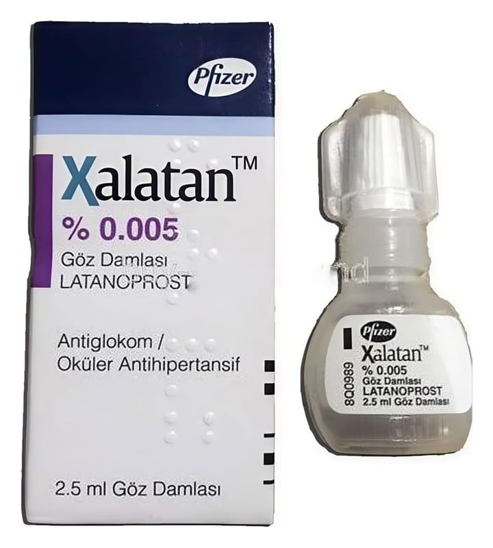

Xalatan % 0,005 Göz Damlası, 2.5 ml

Ne için kullanılır
KT · Bölüm 1XALATAN, bir mililitresi 50 mikrogram latanoprost içeren göz damlasıdır. 2,5 mililitre çözelti içeren 5 ml’lik plastik şişelerde sunulmaktadır.
XALATAN, prostaglandinler analoğu adı verilen gruba dahil bir ilaçtır. Bu ilaçlar, gözün içindeki akışkan sıvının kan akımına doğru olan doğal dışa akımını artırır.
XALATAN, glokomun bir çeşidi olan açık açılı glokomun ve gözdeki yüksek tansiyonun (oküler hipertansiyon) yetişkinlerdeki tedavisi için kullanılır. Bu koşullar, gözünüzün içi ndeki basıncın artmasından dolayı görme yeteneğinizi etkiler.
XALATAN, tüm yaş grubundaki çocuklarda ve bebeklerde artmış göz içi basıncı ve glokom tedavisinde kullanılır.